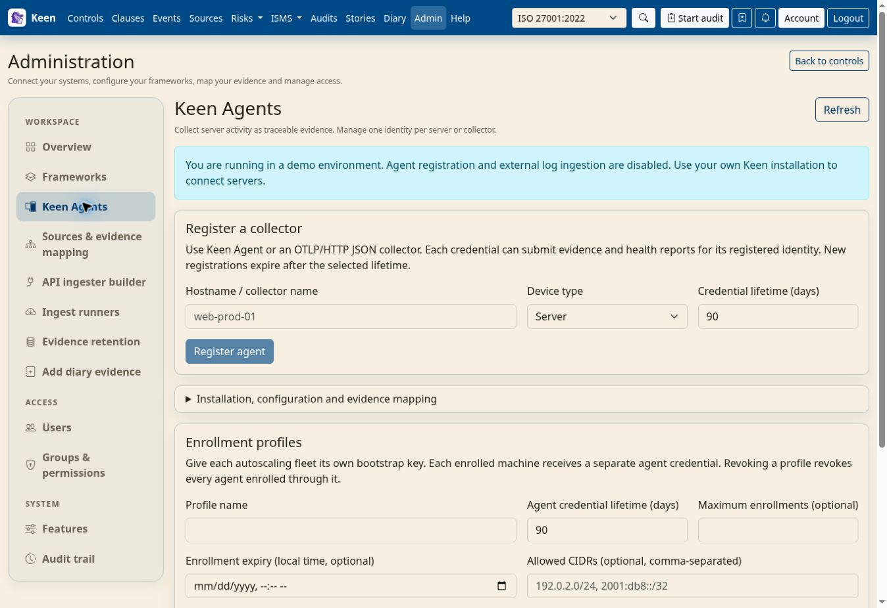

Administering Keen
Keen Agent installation and operation
Chapter 27 of 30
Operate Keen Agent and OTLP collectors
Keen Agent is a small Linux service that reads selected host logs and sends them to Keen as evidence. Getting one running takes three steps: register the collector in Keen, install the agent on the server, and confirm the first events arrive. Everything else in this chapter is detail for when you need it.
- Collector
- One registered agent identity with its own credential. Register one per static server.
- Enrollment profile
- A bootstrap key that lets an autoscaling fleet register its own collectors.
- Source
- One log file pattern or journal selection on the host, with a parser that enriches its records.

Diagram source (Mermaid)
flowchart TB
L["Selected log files or journal"] --> P["Parse and redact"]
P --> Q["Atomic local transaction: UUID, record and checkpoint"]
Q --> T["Send OTLP JSON over verified HTTPS"]
T --> A{"Valid scoped credential and batch?"}
A -->|Yes| D{"UUID already stored?"}
D -->|Same content| OK["Return success"]
D -->|New| S["Store artifact, event and mappings; commit"]
S --> OK
OK --> R["Remove acknowledged records from queue"]
A -->|Permanent rejection| H["Pause delivery; retain records"]
D -->|Conflicting content| H
T -->|Network error or retryable response| B["Back off and retry the same UUIDs"]
B --> T
The agent is a standalone Go service. It enriches records with patching, HTTP, PHP and Linux Audit context and sends OTLP/HTTP JSON to Keen, which stores the events and their redacted artifacts and applies the existing mapping rules.
Set up agent access
- Open Admin → Keen Agents and select Register a collector. Choose the credential expiry (1-365 days, default 90).
- Save the one-time credential somewhere safe; Keen stores only a SHA-256 hash of it.
- Note the endpoint. Through the standard reverse proxy it is
https://keen.example.org/api/v1/otlp/logs; direct API deployments use/v1/otlp/logs. TLS must terminate at a trusted reverse proxy.


For an autoscaling fleet, create an enrollment profile instead (see below). No Fernet integration key is needed for agent credentials; outbound API integration credentials keep their existing encryption mechanism.
Build and install on a Linux server
Keen Agent is maintained in its own repository. Prefer the package and installation instructions shipped with that release; the manual build below shows what a packaged installation does for you. Keep the token, config and spool during an upgrade.
- Build with the Go version required by the repository's
go.mod(dependencies are pinned ingo.modandgo.sum), create the service account and install the files:cd keen-agent make build sudo useradd --system --home-dir /var/lib/keen-agent --shell /usr/sbin/nologin keen-agent sudo install -m 0755 dist/keen-agent /usr/local/bin/keen-agent sudo install -d -o root -g keen-agent -m 0750 /etc/keen-agent sudo install -o root -g keen-agent -m 0640 examples/config.yaml /etc/keen-agent/config.yaml sudo install -o root -g keen-agent -m 0640 /dev/null /etc/keen-agent/token sudoedit /etc/keen-agent/config.yaml sudoedit /etc/keen-agent/token sudo install -m 0644 packaging/keen-agent.service /etc/systemd/system/keen-agent.service - Paste the issued credential into the token file as a single line. Set the endpoint and enable only sources that exist on the server.
- Grant the service account read access to the selected logs. For journald, where the group exists:
sudo usermod -aG systemd-journal keen-agent - Check, enable and watch:
sudo -u keen-agent /usr/local/bin/keen-agent -command check sudo systemctl daemon-reload sudo systemctl enable --now keen-agent sudo journalctl -u keen-agent -f sudo -u keen-agent /usr/local/bin/keen-agent -command status
check validates configuration, file permissions and CA loading; status reads the latest local report while the service runs. The service reports health to Keen about once a minute. Restart it after changing configuration or replacing a blocked or expired credential.
Keep credentials out of arguments, YAML and shell history. Avoid granting write access, CAP_AUDIT_CONTROL or CAP_DAC_READ_SEARCH; the shipped service runs without capabilities and does not need root once read access is configured.
Going deeper: file permissions, auditd and the systemd unit
For files, use a dedicated log-reader group or narrowly scoped ACLs. Auditd commonly restricts both /var/log/audit traversal and the log file itself: configure its log_group and directory permissions according to local policy, and ensure logrotate and auditd rotation create replacement files with the same read access. On systems without useradd, create the equivalent system account through the operating system's account manager, and skip account creation if it already exists. Packaged binaries and vendor systemd units may use different paths from a manual build; remove a stale manually installed service override before switching installation methods.
The service uses /var/lib/keen-agent with mode 0700. The systemd unit limits privileges, memory, process count and writable paths; keep state_dir at its default unless you also update the unit's StateDirectory and ReadWritePaths, and test the unit against your distribution's security policy (including SELinux/AppArmor). Large or slow collections can delay health reports.
Configuration and log semantics
examples/config.yaml holds the complete configuration with commented source examples. Each source names a path pattern or journal selection and a parser. Parsing is deliberately conservative: an unrecognised format remains evidence as redacted text.
| Parser | Enrichment |
|---|---|
raw |
Original redacted text, collection time and source |
syslog |
RFC 5424/ISO timestamps; RFC 3164 host-local timestamp with year inference |
json |
Bounded top-level JSON fields; malformed JSON retained with a parse marker |
nginx |
Common access-log request path (without query), HTTP status; 5xx outcome |
php |
PHP fatal/parse error outcome; optional multiline grouping |
dpkg |
Timestamp, install/upgrade/remove/purge/status, package and available versions |
apt |
History transaction grouped from Start-Date to End-Date, package lists and requester |
dnf |
Recognized Installed/Upgraded/Removed/Erased/Downgraded messages; raw RPM/DNF messages retained |
auditd |
Group by audit timestamp/serial, record type, auid, syscall fields and success/failure |
Choose paths carefully. Source paths are restricted to /var/log, a newly discovered file starts at byte zero, and a journal source's initial read uses initial_lookback, so a broad pattern can import an unintended archive. Unknown YAML keys and unknown parsers are rejected.
Going deeper: file safety, grouping and timestamps
Configuration must be non-writable by group and others, credential files must also deny all access to others, and symlinks in any path component and non-regular files are refused. Keep log directories and configuration owned by trusted administrators.
Dpkg and legacy syslog times use the agent host's timezone. Auditd records are grouped across reads and restarts, with interleaved IDs supported; an EOE record closes a group, and groups also close after three seconds without a new record or at the size limit, carrying group_completion=timeout_or_size, so late records can form another event. Raw grouped records preserve fields that repeat across audit record types and enrichment uses the first occurrence. Hex-encoded audit EXECVE/PROCTITLE values remain encoded, and syscall numbers stay numeric for interpretation against the host architecture's syscall table.
multiline_start groups file records until the next matching line or idle/size boundary. Journald uses its native message boundaries and durable cursors; auditd grouping and multiline options apply to file sources.
Delivery, rotation and retention
Every record receives a random UUID and is committed to the local queue together with its file offset or journal cursor in one synchronised bbolt transaction. After Keen acknowledges a batch, those records are removed. A crash before acknowledgement resends the same UUIDs, and Keen deduplicates by registered identity plus UUID while rejecting conflicting content.
The result is at-least-once delivery for records durably collected, with server-side deduplication while their Keen events remain retained. The status file and agent UI show queue bytes, record count, dropped/gap count, source errors, credential expiry and last contact; “Connected” means recent authenticated contact, so also inspect source status and queue growth.
Continuity depends on the state directory. Clearing it or registering a new identity breaks continuity. Never copy one agent's state or credential to another server. Source deletion, log rotation during a long outage, disk failure, explicit queue expiry or deleting Keen evidence can also affect these guarantees.
Going deeper: retries, pauses and queue limits
- Network errors, 408, 429 and server errors retry with exponential backoff and jitter, honoring Retry-After up to one hour. Redirects are refused and TLS certificates/hostnames are verified; there is no insecure TLS switch.
- Permanent client errors (including 400, 401, 403, 409, 413 and 415) pause delivery. Records remain queued, collection continues until capacity, and health reports show the pause. Fix the problem and restart the service. A partial-success response with rejected records also pauses delivery for review; the Keen receiver itself uses whole-batch acceptance.
queue_mbbounds serialized queued payload and checkpoint bytes. Pending groups/checkpoints are additionally capped at a quarter of that budget or 16 MiB, whichever is smaller. At capacity, collection pauses without advancing the affected checkpoint. Database allocation adds overhead. bbolt reuses freed pages and retains its allocated high-water size; allow disk headroom above the payload limit. It is not a hard filesystem quota.retention_days: 0retains unsent records indefinitely. A positive value permits removal of records older than that many days since queueing. Removal increments the dropped/gap counter. Choose this only when the operational policy permits lost evidence.- Delivery batches records and retries failures with backoff. Filter high-volume access logs according to the evidence you need. Monitor queue growth and choose filters and retention appropriate to the expected event volume.
Going deeper: log rotation, archives and size limits
- File identity uses device/inode plus a prefix fingerprint. Configure both the live filename and uncompressed rotated files. Rename rotation is supported when the rotated file remains matched. Copy-truncate is detected when its size/prefix changes and increments the gap counter; a truncate-and-regrow race with an identical prefix cannot be reliably detected by polling.
- Compressed archives are not replayed. Set an uncompressed retention window longer than expected outages. A missing/vacuumed journal cursor reports an error; resolve journal retention or explicitly start a new source name with a chosen lookback, accepting possible replay.
- Lines over 60,000 bytes are consumed without unbounded allocation and counted as dropped. Incomplete lines wait for a newline. Source paths are capped at 256 matched files, each source at 32 pending groups, and retained checkpoints at 4,096. Reaching a checkpoint limit pauses new-file collection; inspect state/rotation policy before planning a fresh state directory and replay.
A quiet generic OTLP collector may show no recent contact because it does not send Keen heartbeats.
Evidence and framework mapping
The server assigns source=keen-agent and binds system to the administrator-registered name; client-supplied host names remain descriptive attributes. The normalised payload includes source (the configured log source), action, outcome, actor, raw, fields and the stable event ID, and parsed fields are available as structured-field conditions in the rule editor.
Use Admin → Evidence definitions to create rules against these fields for your own framework and controls. Useful criteria include source=keen-agent, action=package.upgrade, action=auditd.SYSCALL or action=http.request with outcome=failure. Rules are not installed automatically for an assumed framework version, so preview them in the rule editor.
Going deeper: what an agent record proves
The artifact contains the normalised, redacted record; raw pointers include agent ID, event ID, receive time and the canonical received-record digest. A recorded update demonstrates an observed maintenance action; a compliance claim about patch timeliness additionally needs asset scope, applicable requirements, deadlines and measurements. Host logs and heartbeats are claims from a credentialed collector, and a compromised host can falsify them, so preserve independent corroboration where required.
Security and privacy
The agent has no inbound listener, remote command channel, plugin loading, template execution or shell-based parser. Its only child process is /usr/bin/journalctl with fixed arguments and validated unit names, and parsing uses bounded inputs and Go regular expressions. Install the binary, configuration, CA files, log directories and token under trusted ownership.
Default redaction covers common password and token assignments, bearer tokens and authentication and cookie headers; redact adds RE2 expressions, applied before the spool, and Keen applies its own redaction and optional privacy masking again before storage. These patterns cannot guarantee removal of every secret or personal datum, so review actual source formats, minimise selected logs and add organisation-specific rules.
The private spool is not encrypted by the agent; use host disk encryption if required. Inbound agent tokens are hashed in Postgres, and the agent must retain its plaintext token in a protected file.
Going deeper: rotation and revocation
Rotate through the UI, replace the host token atomically with its protected permissions, then restart. Revocation is permanent for the identity and takes effect after any already-running locked ingestion transaction completes; it preserves historical evidence. A token only authenticates log submission and heartbeat updates; it cannot read evidence, edit controls or administer Keen. Keen's existing database and object-storage encryption policies govern received evidence.
OTLP interoperability
The receiver implements the logs signal over OTLP/HTTP JSON at /v1/otlp/logs (or /api/v1/otlp/logs through the UI proxy), so other OpenTelemetry collectors can send to it. Standard collectors must select JSON and override their logs endpoint; Keen-specific enrichment is optional, and examples/alloy.alloy shows a configuration. Keen's OTLP endpoint accepts logs only; Prometheus metrics need a separate conversion into effectiveness-measure submissions.
Fluent Bit's OpenTelemetry output currently sends OTLP Protobuf, which this JSON receiver cannot accept directly. An OTLP-capable intermediary must export JSON, use the Keen logs endpoint and bearer credential, and limit batches to 64 records and the receiver's byte bounds. Verify exporter retry behaviour and stable record timestamps and identity before rollout.
Keen Agent emits these optional log attributes:
| Attribute | Meaning |
|---|---|
keen.event.id |
Stable UUID; assigned once before queueing |
keen.source |
Configured log source name |
keen.action, keen.outcome, keen.actor |
Parsed activity |
keen.summary |
Bounded summary |
keen.field.* |
Additional parsed context |
Going deeper: generic records and deduplication
Generic records use action=log.record, source=otlp within their normalised payload, and a deterministic UUID derived from the authenticated identity and canonical record content. This deduplicates identical retries, and identical records with the same timestamp and content also collapse; supply a stable keen.event.id when distinct identical records must be preserved. Avoid changing resource or scope metadata during replay. The actual Keen event source remains keen-agent for both senders.
Going deeper: receiver limits and responses
Receiver limits: 64 records/request; 1 MiB compressed and decompressed body; gzip or identity encoding; raw body 65,536 characters; 128 normalized fields, each value up to 4,096 characters and aggregate serialized fields up to 32 KiB. Timestamps must be timezone-aware via OTLP epoch nanoseconds, between year 2000 and five minutes into the future. Attribute nesting is limited to eight levels. Client enrichments beginning resource. or otel. are reserved. Rate limits are 60 log requests/minute per identity and 120/minute per observed client IP, plus separate heartbeat limits; shared NAT or proxy deployments must account for the aggregate limit. The receiver fails closed if its rate-limit store is unavailable.
A successful response is {} after the complete batch commits. UUID conflicts return 409; invalid batches return 400; oversized requests 413; unsupported encodings 415. Server errors leave the transaction uncommitted for retry. An object-store write followed by database rollback can leave an unreferenced, redacted object; each persistence attempt uses a fresh artifact key, so retries also work with write-once local storage and hosted S3 conditional writes. Configure operational cleanup for unreferenced objects in accordance with your retention policy, because database rollback never deletes retained evidence objects.
Check agent operation
keen-agent -command check
keen-agent -command status
systemctl status keen-agent
journalctl -u keen-agent --since "1 hour ago"
Run the checks as the agent service user so they use the same file permissions as the service. Confirm that its configuration, credentials and selected logs are readable, review queue size, source health and delivery counters, then open the agent inventory in Keen and inspect a received event: its timestamp, fields, retained artefact and mapped controls.
Enrollment profiles for autoscaling fleets
When machines come and go, an enrollment profile lets each new machine register itself. Open Admin → Keen Agents → Enrollment profiles and create a profile for each cluster or environment: choose the lifetime of the agent credentials, an optional enrollment expiry, an optional total enrollment limit, and optional allowed client CIDRs and fleet labels. Keen shows the bootstrap key once; store it in the fleet's secret manager.
Each enrollment creates an independent agent identity and token, and the agent inventory identifies its profile. Individual servers can continue using Register a collector.
| Profile action | Effect |
|---|---|
| Rotate bootstrap key | Replaces the fleet's enrollment key. Existing agent credentials remain valid. |
| Pause enrollment | Stops registrations. Existing agents can submit evidence and renew their credentials. Resume permits registrations again, subject to expiry and quota. |
| Revoke profile and agents | Permanently disables the profile and all associated agents. Create a new profile for a replacement fleet; existing evidence remains. |
| Revoke an agent | Disables that individual identity. |
Profile expiry and enrollment limits apply to registration; profile revocation also applies to ingestion and renewal. Revoking a compromised fleet's bootstrap access requires revoking or rotating its key, because an attacker who retains a valid reusable key can attempt new registrations.
Configure keen-agent for an autoscaling machine
Use examples/autoscale.yaml from the agent repository as a starting point. Provision the bootstrap key from your secret manager before starting the service, at /etc/keen-agent/bootstrap-key, owned by root:keen-agent with mode 0640, and configure the agent with:
endpoint: https://keen.example.org/api/v1/otlp/logs
enrollment:
bootstrap_key_file: /etc/keen-agent/bootstrap-key
state_dir: /var/lib/keen-agent
sources:
- name: system
kind: journal
parser: syslog
The enrollment name defaults to the hostname; an optional enrollment.name sets a stable machine name. Omit token_file in enrollment mode (static servers use it with an administrator-managed token), and configure ca_file when your receiver uses a private certificate authority; HTTPS verification remains enabled.
Run keen-agent -command check, then start the service: it enrolls the machine and saves its identity, token and retry state atomically in /var/lib/keen-agent/identity.json with mode 0600. After successful enrollment the bootstrap key file can be removed from that machine; renewal uses its individual agent token.
Keep the state directory private and persistent. It must be owned by the service user with mode 0700 (the supplied systemd unit provides it). Preserve it across restarts and keep it out of reusable machine images.
Going deeper: renewal, recovery and blocked agents
The agent renews its credential before expiry and recovers interrupted requests using saved private nonces. Temporary network failures and rate limits use delayed retries, and collection continues into the bounded local queue while credentials are unavailable.
keen-agent -command status reports the profile ID, agent ID, credential expiry, readiness, next retry and any blocked reason. An authentication rejection persists across restarts; resolve the cause with an administrator. For a paused profile or corrected network admission policy, stop the service, run keen-agent -command retry-credentials as the service user and restart it; this retries the saved identity or enrollment attempt. Revoked or expired identities require administrator intervention, and a missing identity file requires restoring the machine's private state or deliberately provisioning a replacement machine.
Enrollment API for provisioning clients
Provisioning tools can enrol without the agent's built-in support. Use verified HTTPS and POST to /api/v1/agents/enroll with the bootstrap key in the Authorization bearer header and JSON containing name and nonce. Generate the nonce from 32 cryptographically random bytes, encoded as unpadded URL-safe Base64 (43 characters), and persist it in a private file before sending the first request. The response contains agent and token; save them atomically with restrictive permissions and keep agent state across reboots.
Going deeper: recovery semantics and what the server records
Retrying the same name and nonce with the same bootstrap key recovers the same identity and token while that credential remains current and enrollment is allowed. Keep the nonce confidential and unique per machine and avoid cloning it into images; hostnames alone never recover credentials. Machine names and client-supplied hardware details are claims, and the bootstrap key authorises admission to the fleet. Keen stores the profile relationship, enrollment address and server-assigned labels alongside the agent identity.
Credential renewal and recovery
Enrolled agents POST to /api/v1/agents/renew using their current agent bearer token and a fresh private random nonce, before the credential expires. Persist the renewal nonce before sending the request and atomically replace the token when the response arrives; the old token immediately loses ingestion access.
Going deeper: the recovery window
For five minutes, the old token and exact renewal nonce can recover the same renewal response; a different nonce cannot use that old token, and administrator rotation clears this window. Expired or revoked credentials require administrator intervention, and clients must stop automatic enrollment fallback after an authentication rejection. The enrollment configuration above manages this lifecycle automatically; clients implementing these APIs themselves must persist each nonce before sending its request and preserve the associated identity during recovery.
Network and secret handling
Restrict the enrollment endpoint at nginx, a load balancer or a private network, and prevent direct access around that restriction. Application-level CIDR checks use Keen's trusted-proxy configuration and ignore forwarded addresses from untrusted peers. Enrollment and renewal have fail-closed rate limits backed by Valkey, so clients should honour Retry-After and use bounded retry delays.
Fetch bootstrap keys from a secret manager using the machine's workload identity where available, and keep keys, nonces and operational tokens out of command-line arguments, images and logs. Removing a local bootstrap file does not remove copies held in user-data or provisioning logs. Use separate profiles to limit a leaked key's reach.
Agent health and journal evidence
Agent heartbeats report delivery counters, queue size and source health. Review these in the agent inventory to identify collection failures or delivery backlogs, and use the agent's local status and service logs to investigate a reported problem.
Journal records include available service.name, process.name, process.pid, user.id, group.id, host.name and log.syslog.priority; original metadata remains and is redacted before queuing. Known agent failures, cron command starts and SSH authentication results receive specific actions, and unrecognised messages remain syslog.record. Inspect an event's structured fields when choosing mapping conditions.
Filter before agent delivery
Filtering on the host keeps noisy logs out of Keen altogether. Each source accepts include_when and exclude_when lists, and each condition has a field (a literal parsed field key), an operator and a value.
| Operators | Notes |
|---|---|
equals, starts_with, contains, exists, in_cidr | Quote numeric values such as "404". Missing fields do not match. |
By default each list uses OR: a record must match any include condition if any are given, and is then discarded on any exclusion match. Set exclude_match: all under the source to require every exclude_when condition (AND); for example, client.ip in 192.0.2.0/24 AND status equals "200" discards only status 200 requests from that network. Include conditions remain OR, empty exclusion lists discard nothing, and a missing field prevents an AND exclusion.
Going deeper: what filtering changes
Redaction precedes structured filtering. Excluded records advance checkpoints but never enter the queue, and already queued events are unaffected. Status and heartbeats report persistent filtered_by_source counters for structured filters, separately from rejected records; raw regex filters are not included in those counters. Keep checkpoints when adjusting collection filters.
Workstation agents and people
Choose Server (the default) or Workstation when registering a collector. For a workstation, select its Person and use the device hostname as the collector name. Give each device its own credential. A Person can have several workstation agents.
Existing collectors, including agents created through enrolment profiles, have a Save assignment action. Changing the type or Person starts the overview with reports observed after the assignment. Historical events and their control mappings remain available. Enrolment profiles initially create server identities; administrators assign individual workstations.
People must be enabled under Features to assign a workstation. New Keen users already have a linked Person. Upgrades also create missing People records for existing accounts, preserving existing account links. Unlinked People with similar names or email addresses remain separate for an administrator to review.
Open ISMS → People & vendors → open a Person → Workstation posture to review workstation posture. The collector must send schema-version-1 posture observations; ordinary logs do not establish posture. No collector change is required for existing posture payloads.